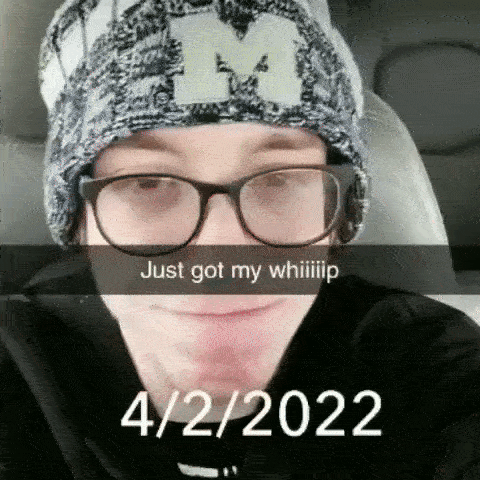

this some hood shit

<body background="dolls.jpg">
  
<body>
  





<video width="410" height="410" controls>
  <source src="johnny.mp4" type="video/mp4">
</video>
<video width="410" height="730" controls>
  <source src="latina.mp4" type="video/mp4">
</video>
<video width="410" height="730" controls>
  <source src="mouse.mp4" type="video/mp4">
</video>
<video width="730" height="410" controls>
  <source src="gas of tank.mp4" type="video/mp4">
</video>
<video width="730" height="410" controls>
  <source src="moe.mp4" type="video/mp4">
</video>
<video width="410" height="410" controls>
  <source src="ironman.mp4" type="video/mp4">
</video>
<iframe width="560" height="315" src="https://www.youtube.com/embed/5vCAK1rfKxY" title="YouTube video player" frameborder="0" allow="accelerometer; autoplay; clipboard-write; encrypted-media; gyroscope; picture-in-picture" allowfullscreen></iframe>
<iframe width="560" height="315" src="https://www.youtube.com/embed/GZ6ltKuGY9Q" title="YouTube video player" frameborder="0" allow="accelerometer; autoplay; clipboard-write; encrypted-media; gyroscope; picture-in-picture" allowfullscreen></iframe>
  
<a class="twitter-timeline" data-lang="ar" data-width="500" data-height="500" data-theme="dark" href="https://twitter.com/TrickstersHole?ref_src=twsrc%5Etfw">Tweets by TrickstersHole</a> <script async src="https://platform.twitter.com/widgets.js" charset="utf-8"></script>
<a class="twitter-timeline" data-theme="dark" data-width="500" data-height="500" href="https://twitter.com/SouthSideHoods?ref_src=twsrc%5Etfw">Tweets by SouthSideHoods</a> <script async src="https://platform.twitter.com/widgets.js" charset="utf-8"></script>
<a class="twitter-timeline" data-theme="dark" data-width="500" data-height="500" data-theme="dark" href="https://twitter.com/schmukulum?ref_src=twsrc%5Etfw">Tweets by schmukulum</a> <script async src="https://platform.twitter.com/widgets.js" charset="utf-8"></script>
